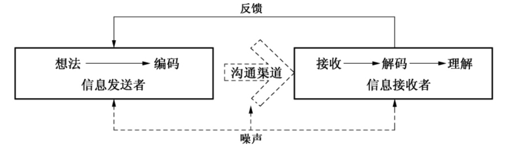
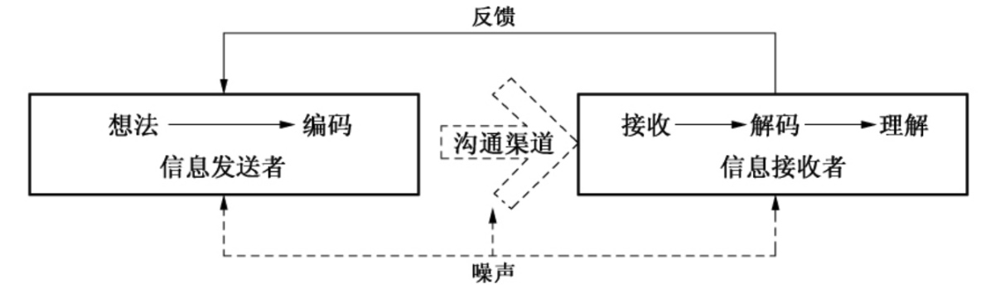
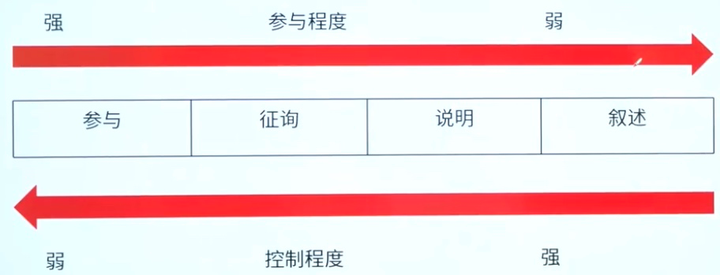
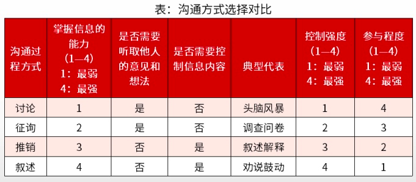
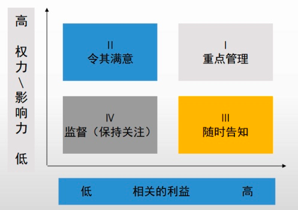

项目沟通管理和干系人管理
12、项目沟通管理和干系人管理
沟通模型
 

1 | 在管理项目时，沟通是一个过程，是人们分享信息、表达思想和情感的过程，包括信息的生成、传递、接受、理解和检查。 |
- 编码
1 | 把思想或想法转换成他人能理解的语言 |
- 信息和反馈信息
1 | 编码过程所得到的结果 |
- 媒介
1 | 用来传递信息的方法 |
- 噪声
1 | 干扰信息传输和理解的一切因素（外部噪声、内部噪声和语义噪声） |
- 解码
1 | 把信息还原成有意义的思想或想法 |
沟通渠道数量计算
1 | M = n*(n-1)/2,其中n>=1 |
沟通方式（速记词：参征说书）


1 | 沟通方式的选择根据发送信息方的要求决定，通常基于以下因素进行选择： |
55387定律
1 | 55：38：7模式是对人与人之间沟通的结论：讯息中有55%的意义来自视觉的身体语言（仪态、姿势、表情）。38%的意义来自谈话时的声音面（语气，声调，速度）。仅有7%的意义来自实际说出来说话内容（遣词用字）。 |
沟通基本技能
1 | 1、主动倾听 |
干系人登记册
1 | 为项目的沟通计划提供了干系人信息，从干系人登记册中可以知道项目中干系人的信息：主要沟通对象（主要干系人）、关键影响人、次要沟通对象（次要干系人）。 |
- 主要沟通对象
1 | 项目经理要认真仔细地分析主要沟通对象，要了解他们的背景，以及他们的一些个人（或者组织）特点，他们需要的信息包括涉及项目的哪些内容，他们什么时候需要这些内容，以及与他们进行沟通时需要特别注意的方面。 |
- 关键干系人
1 | 项目经理应该认真查明在沟通过程中是否有些人或者组织具有特殊决定权，他们是否能够直接影响沟通的结果，如果有，要了解他们是谁，他们的权力范围、他们的影响力大小等等。 |
- 次要沟通对象
1 | 项目经理还应该了解某些不是主要干系人和关键影响人的其他人或者组织，他们也许不是直接的项目参与者、供应商、使用者，但是他们可能对项目的实施具有潜在的影响力。 |
沟通需求
1 | 识别和确定项目沟通需求时应包括： |
沟通方法
- 交互式沟通
1 | 沟通双方或多方多方位的交流信息 |
- 推式沟通
1 | 把信息推送给信息接收者，信息接收者处于他们的本来位置不变 |
- 拉式沟通
1 | 把信息放在一个固定的位置，把项目相关方拉到这个位置查看信息 |
沟通管理计划 △
1 | * 干系人的沟通需求 |
干系人分析模型 – 矩阵分析

本博客所有文章除特别声明外，均采用 CC BY-NC-SA 4.0 许可协议。转载请注明来自 East'blog！